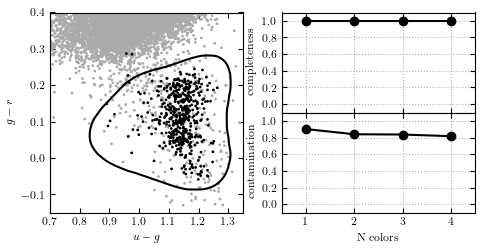

Kernel SVM Classification of photometry¶
Figure 9.11
Kernel SVM applied to the RR Lyrae data (see caption of figure 9.3 for details). This example uses a Gaussian kernel with gamma = 20. With all four colors, kernel SVM achieves a completeness of 1.0 and a contamination of 0.852.
{kind=link}
@pickle_results: computing results and saving to 'kernelSVM_rrlyrae.pkl'
completeness [1. 1. 1. 1.]
contamination [0.90108303 0.83901293 0.83573141 0.81561238]
# Author: Jake VanderPlas
# License: BSD
# The figure produced by this code is published in the textbook
# "Statistics, Data Mining, and Machine Learning in Astronomy" (2013)
# For more information, see http://astroML.github.com
# To report a bug or issue, use the following forum:
# https://groups.google.com/forum/#!forum/astroml-general
from __future__ import print_function
import numpy as np
from matplotlib import pyplot as plt
from sklearn.svm import SVC
from sklearn import metrics
from astroML.datasets import fetch_rrlyrae_mags
from astroML.utils.decorators import pickle_results
from astroML.datasets import fetch_rrlyrae_combined
from astroML.utils import split_samples
from astroML.utils import completeness_contamination
#----------------------------------------------------------------------
# This function adjusts matplotlib settings for a uniform feel in the textbook.
# Note that with usetex=True, fonts are rendered with LaTeX. This may
# result in an error if LaTeX is not installed on your system. In that case,
# you can set usetex to False.
if "setup_text_plots" not in globals():
from astroML.plotting import setup_text_plots
setup_text_plots(fontsize=8, usetex=True)
#----------------------------------------------------------------------
# get data and split into training & testing sets
X, y = fetch_rrlyrae_combined()
X = X[:, [1, 0, 2, 3]] # re-order the colors for better 1-color results
# SVM takes several minutes to run, and is order[N^2]
# truncating the dataset can be useful for experimentation.
#X = X[::5]
#y = y[::5]
(X_train, X_test), (y_train, y_test) = split_samples(X, y, [0.75, 0.25],
random_state=0)
N_tot = len(y)
N_st = np.sum(y == 0)
N_rr = N_tot - N_st
N_train = len(y_train)
N_test = len(y_test)
N_plot = 5000 + N_rr
#----------------------------------------------------------------------
# Fit Kernel SVM
Ncolors = np.arange(1, X.shape[1] + 1)
@pickle_results('kernelSVM_rrlyrae.pkl')
def compute_SVM(Ncolors):
classifiers = []
predictions = []
for nc in Ncolors:
# perform support vector classification
clf = SVC(kernel='rbf', gamma=20.0, class_weight='balanced')
clf.fit(X_train[:, :nc], y_train)
y_pred = clf.predict(X_test[:, :nc])
classifiers.append(clf)
predictions.append(y_pred)
return classifiers, predictions
classifiers, predictions = compute_SVM(Ncolors)
completeness, contamination = completeness_contamination(predictions, y_test)
print("completeness", completeness)
print("contamination", contamination)
#------------------------------------------------------------
# compute the decision boundary
clf = classifiers[1]
xlim = (0.7, 1.35)
ylim = (-0.15, 0.4)
xx, yy = np.meshgrid(np.linspace(xlim[0], xlim[1], 101),
np.linspace(ylim[0], ylim[1], 101))
Z = clf.predict(np.c_[yy.ravel(), xx.ravel()])
Z = Z.reshape(xx.shape)
# smooth the boundary
from scipy.ndimage import gaussian_filter
Z = gaussian_filter(Z, 2)
#----------------------------------------------------------------------
# plot the results
fig = plt.figure(figsize=(5, 2.5))
fig.subplots_adjust(bottom=0.15, top=0.95, hspace=0.0,
left=0.1, right=0.95, wspace=0.2)
# left plot: data and decision boundary
ax = fig.add_subplot(121)
im = ax.scatter(X[-N_plot:, 1], X[-N_plot:, 0], c=y[-N_plot:],
s=4, lw=0, cmap=plt.cm.binary, zorder=2)
im.set_clim(-0.5, 1)
ax.contour(xx, yy, Z, [0.5], colors='k')
ax.set_xlim(xlim)
ax.set_ylim(ylim)
ax.set_xlabel('$u-g$')
ax.set_ylabel('$g-r$')
# plot completeness vs Ncolors
ax = fig.add_subplot(222)
ax.plot(Ncolors, completeness, 'o-k', ms=6)
ax.xaxis.set_major_locator(plt.MultipleLocator(1))
ax.yaxis.set_major_locator(plt.MultipleLocator(0.2))
ax.xaxis.set_major_formatter(plt.NullFormatter())
ax.set_ylabel('completeness')
ax.set_xlim(0.5, 4.5)
ax.set_ylim(-0.1, 1.1)
ax.grid(True)
ax = fig.add_subplot(224)
ax.plot(Ncolors, contamination, 'o-k', ms=6)
ax.xaxis.set_major_locator(plt.MultipleLocator(1))
ax.yaxis.set_major_locator(plt.MultipleLocator(0.2))
ax.xaxis.set_major_formatter(plt.FormatStrFormatter('%i'))
ax.set_xlabel('N colors')
ax.set_ylabel('contamination')
ax.set_xlim(0.5, 4.5)
ax.set_ylim(-0.1, 1.1)
ax.grid(True)
plt.show()